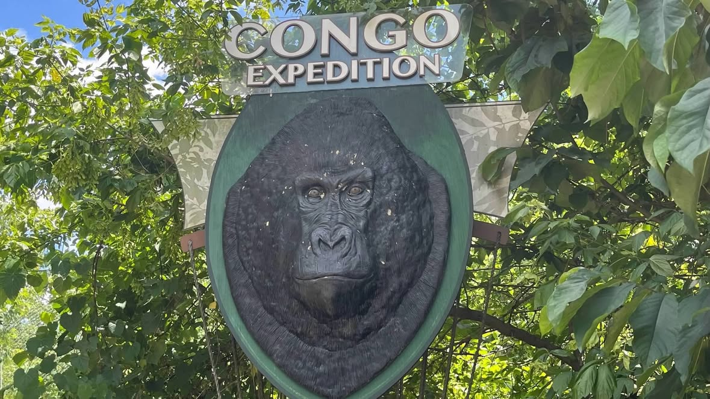

Congo Expedition
Columbus Zoo & Aquarium · Photo Tour #30
I headed into the Congo Expedition at Columbus Zoo, under the entrance sign with its sculpted gorilla head. I walked through the African forest and met gorillas and bonobos, a leopard, a mandrill, and an okapi, along with a whole flock of forest birds.

I headed into the Congo Expedition at Columbus Zoo, in under the entrance sign with its sculpted gorilla head, and I took twenty photos through the African forest.
The birds came first: an African grey parrot, a black crake, a common bulbul, a black-crowned crane, a hamerkop, a green wood hoopoe, a southern bald ibis, a marbled teal, a buff-crested bustard, a speckled pigeon, a blue-bellied roller, and a violet-backed starling — with an eastern black-and-white colobus monkey among them.
Deeper in, I found an African leopard, a western lowland gorilla, bonobos — an adult with an infant — a red river hog, a mandrill, and an okapi.
I posted this on Facebook — open the original post → · same tour on Instagram